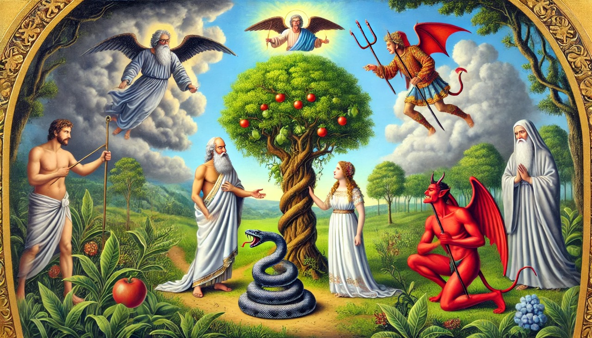

RESENHA
O conto traz muitas críticas e ironias, como por exemplo, papel da mulher na sociedade,
mostrando um comportamento submisso e a falta de liberdade para explorar suas vontades;
a hipocrisia em relação as normas morais coletivas, ou seja, todos enfrentam consequências de suas
escolhas,
apresentando dificuldade entre seguir seus instintos e obedecer às regras sociais.
Dessa forma, o autor usa da ironia para tratar de problemas sociais que ainda estão presentes nos dias
de hoje,
assim como Eva enfrenta limitações por ser mulher, a busca pela igualdade de gênero ainda é uma questão
debatida constantemente.
Além disso, a ideia de que o conhecimento pode ser perigoso em um mundo onde a desinformação é comum, a
hiprocisia principalmente em relação a questões sociais e política, em que as expectativas não condizem
com a realidade,
uma luta interna entre seguir nossos desejos ou a própria razão em relacionamentos e trabalho.
Enfim, indicamos a leitura do conto,
pois ele nos fez refletir muito sobre como os problemas sociais ainda permanecem na contemporaneidade.
"Adão e Eva viram a si mesmos, não nus, como a tradição os pinta, mas vestidos de inocência, de
ventura e de ignorância".
